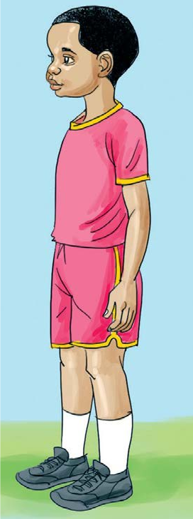
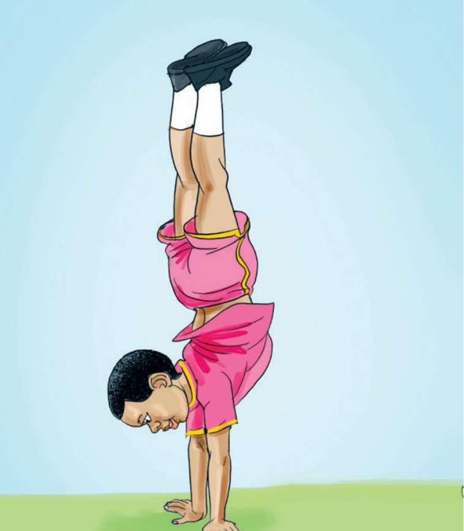

Tucheze mchezo
Kusimama kwa mikono
Hatua za kufuata
- Simama wima.
- Inama na ushike chini.
- Jisukume na uegeshe miguu ukutani.
- Ondoa miguu ukutani na usimame kwa mikono tu.


Rudia hatua hizo.
Tucheze mchezo


Rudia hatua hizo.